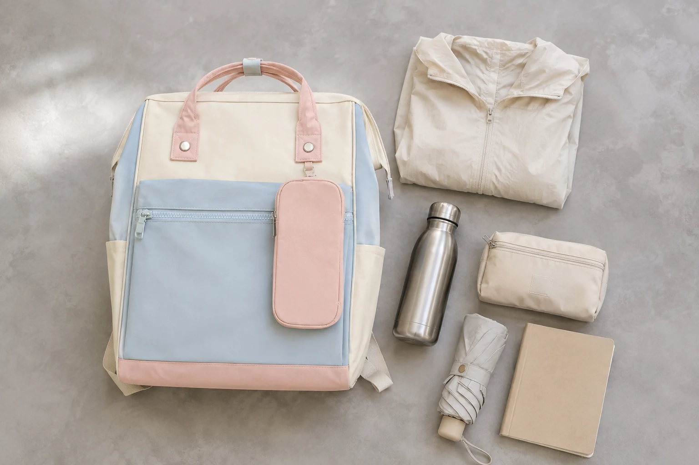
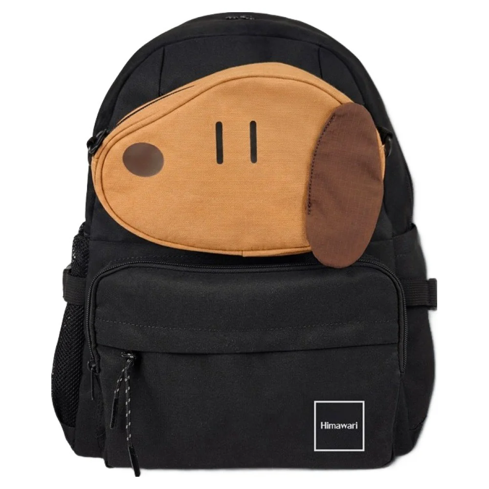

당일치기 짐은 장소가 바뀌는 순간부터

당일치기 외출은 숙박 짐이 없지만 가방이 꼭 작아지는 것은 아닙니다. 겉옷과 음료, 개인 소품을 하나씩 더하면 사용하지 않을 물건까지 남을 수 있습니다. 한편 실제로 필요한 물건을 빼면 외출 중 새로 준비해야 할 수도 있습니다. 가져갈 양을 정하기 전에 오늘 갈 장소와 이동 순서를 적어볼 만합니다. 야외에서 오래 머무는 날과 실내 장소를 여러 번 오가는 날은 같은 외출 시간이어도 준비할 묶음이 다릅니다.
먼저 출발과 첫 목적지, 중간 휴식과 귀가를 순서대로 놓습니다. 장소에서 안내한 준비물이나 가방 반입 조건이 있으면 현재 안내를 확인합니다. 날씨는 출발 시간뿐 아니라 돌아올 무렵까지 보고 필요한 물건을 고릅니다. 이 과정에서 실내에서만 쓸 것과 이동 중에도 계속 쓸 것을 구분할 수 있습니다. 가방의 구역을 미리 네 개로 정하기보다 오늘 장소가 바뀌는 순간을 따라 묶음을 만들면 실제 사용하는 순서와 가까워집니다.
일정이 고르는 추가 짐
| 예상 장면 | 확인할 질문 | 묶음의 기준 |
|---|---|---|
| 야외에 오래 머묾 | 현장 안내와 날씨에서 무엇이 필요한가 | 그 장소에서 꺼낼 개인 물건 |
| 실내 장소를 여러 번 방문 | 입장 때 보여주거나 따로 보관할 것이 있는가 | 확인 자료와 계속 들 소지품 |
| 쇼핑이나 체험이 이어짐 | 돌아올 물건의 형태가 달라지는가 | 새 물건과 사용한 물건의 운반 자리 |
기본 소지품은 오늘도 사용할 것인지 확인한 뒤 남깁니다. 열쇠와 연락 도구, 이동 확인 자료처럼 출발과 귀가에 쓰는 묶음은 위치를 일정하게 정할 수 있습니다. 개인에게 필요한 물건은 실제 사용 조건에 맞춰 챙기고 목록에서 임의로 빼지 않습니다. 그밖에 추가하는 물건은 어떤 장소에서 언제 꺼낼지 이유를 붙여보세요. 사용 순간을 떠올리기 어려운 물건은 일상 가방에 상시 둘지 별도 보관할지 다시 판단할 수 있습니다.
겉옷을 가져갈 경우에는 출발할 때 입을지 가방에 담을지와 외출 중 벗은 뒤의 자리를 함께 봅니다. 접었을 때의 실제 외형을 확인하고 다른 짐과 함께 자연스럽게 닫히는지 살펴보세요. 옷을 넣기 위해 파일이나 개인 소지품을 눌러야 한다면 별도 운반을 생각할 수 있습니다. 음료나 용기 역시 닫힘을 확인하고 종이나 전자기기에 바로 닿지 않을 자리를 정합니다. 물건의 이름보다 현재 형태와 상태가 가방 안의 배치를 고릅니다.
당일 외출용 백팩의 예시로 Himawari No.0423 제품 정보를 참고할 수 있습니다. 이 제품을 검토한다면 오늘의 기본 묶음과 일정에만 쓸 추가 짐을 실제로 놓고 꺼낼 순서를 확인합니다. 첫 방문에서 사용할 자료가 마지막에 넣은 겉옷 아래로 들어가지 않는지 봅니다. 여행용이라는 이름보다 그날의 짐과 맞는지를 질문하면 필요한 조건이 구체적입니다. 가방을 닫은 뒤 다시 열어 첫 묶음만 꺼내보는 준비도 가능합니다.

자리를 바꾸기 전에 회수할 범위
외출 중 잠시 머무는 자리에서는 꺼낸 물건의 위치를 알아둡니다. 연락 도구를 충전하고 겉옷을 벗어두었다면 가방 외에 확인할 곳이 늘어납니다. 다음 장소로 이동하기 전에 사용한 묶음을 먼저 정리하고 책상이나 벤치 주변을 살펴보세요. 같은 가방에 모든 것을 되담기 어렵다면 새로 늘어난 물건이 무엇인지 봅니다. 포장이나 외형이 다른 물건을 기존의 종이 자료 위로 급히 밀어 넣지 않고 필요한 운반 형태를 확인할 수 있습니다.
체험에서 만든 물건을 가져오거나 물건을 구입할 계획이 있다면 돌아올 짐의 조건을 먼저 물어볼 수 있습니다. 작은 물건이라도 포장이 더해지면 가방에서 차지하는 형태가 달라집니다. 활동 장소의 반출 안내와 판매처의 포장 설명을 따르고, 별도로 들 물건이 생기면 백팩 외의 짐에 포함합니다. 출발할 때 빈 공간을 남겨두었다는 사실만으로 모든 물건을 담을 수 있다고 정하지 않는 것이 필요합니다. 실제 받은 상태를 기준으로 판단하면 됩니다.
젖거나 사용한 물건이 생긴 경우에는 출발 때의 깨끗한 묶음과 구분합니다. 옷이나 소품이 다른 상태로 돌아올 수 있는 일정이라면 임시 운반할 봉투나 주머니를 준비할 수 있습니다. 물건별 관리 조건은 각각의 안내에서 확인하고, 가방 자체가 상태의 차이를 해결해줄 것으로 기대하지 않습니다. 사용할 물건과 집에서 정리할 물건이 섞이지 않게 하면 귀가 뒤 무엇을 먼저 꺼낼지도 분명해집니다. 같은 일정이라도 날씨가 바뀌면 이 묶음은 다시 조정할 수 있습니다.
귀가 길에는 계속 사용할 소지품의 위치를 유지합니다. 새 물건이나 포장이 늘었다고 교통카드와 연락 도구를 찾기 어려운 곳으로 옮기면 다시 짐을 꺼내야 합니다. 마지막 이동에서 무엇을 쓸지 확인하고, 한 번 사용한 물건은 정한 위치로 돌려놓습니다. 별도로 운반한 쇼핑백과 겉옷도 가져갈 개수에 포함하세요. 출발 때 가방 하나였던 일정이 돌아올 때는 여러 묶음이 될 수 있으므로 현재 상태를 기준으로 정리하면 됩니다.
집에서는 그날만 쓴 묶음을 꺼내고 다음 외출에도 필요한 것을 따로 남깁니다. 받은 안내와 포장, 사용한 물건은 각각의 목적에 맞게 정리합니다. 당일치기를 위해 추가했지만 실제로 꺼내지 않은 것이 있다면 다음 일정에서 필요할 이유가 있는지 다시 보세요. 준비 기록에는 장소가 바뀔 때 찾기 어려웠던 물건과 돌아올 때 새로 생긴 짐을 남길 수 있습니다. 같은 시간의 외출이라도 다음 목적지와 활동이 달라지면 그 기록과 현재 안내를 함께 대조하면 됩니다.